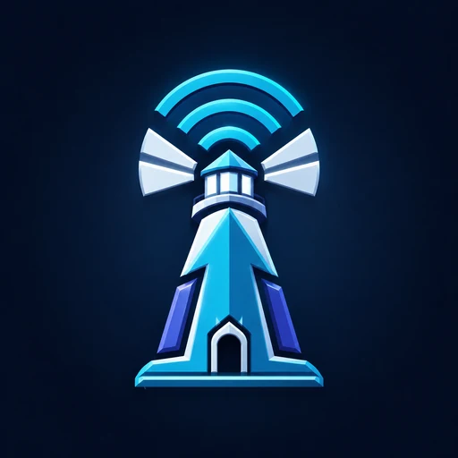
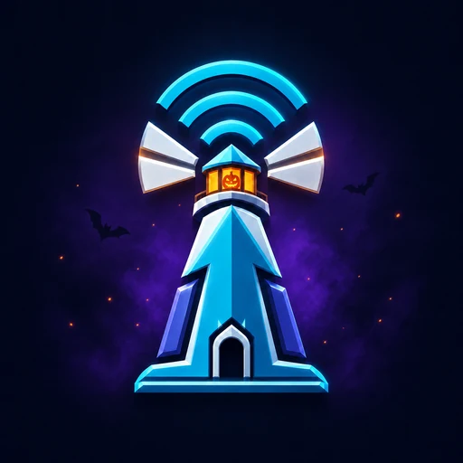
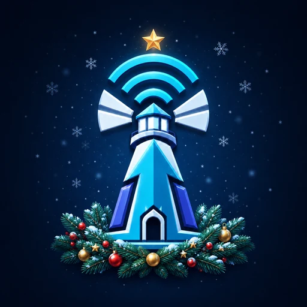
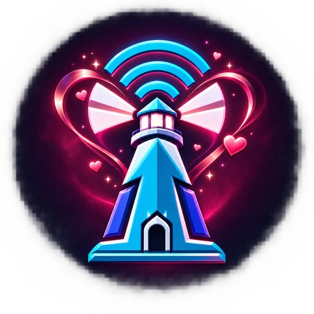

Propietario del servidor
Configura canales y seguridad, delega roles, administra streamers y puede retirar registros.

FaroLiveManual oficialDOCUMENTACIÓN PÚBLICA
Configura anuncios de directos, administra streamers y crea perfiles públicos desde un panel conectado con Discord.
Para propietarios y administradores de servidores, personal autorizado de FaroLive y streamers vinculados. No es una guía para instalar copias del producto ni contiene código, credenciales o detalles de la infraestructura privada.
01 · ACCESO
Configura canales y seguridad, delega roles, administra streamers y puede retirar registros.
Gestiona las áreas permitidas por los roles que el propietario seleccionó en FaroLive.
Personaliza sus mensajes, consulta sus registros y crea o edita su perfil público.
Accede al panel global según su función: soporte, moderación o superadministración.
02 · INSTALACIÓN
Entra en panel.farolive.xyz y selecciona Agregar FaroLive a un servidor.
Discord sólo mostrará servidores donde tengas autorización para instalar aplicaciones.
Autoriza únicamente los permisos solicitados. FaroLive no necesita el permiso Administrador.
Inicia sesión con Discord. Si la comunidad todavía no aparece, utiliza la opción de recargar servidores.
03 · CONFIGURACIÓN
04 · CREADORES
Un streamer puede participar en varias comunidades y tener cuentas en varias plataformas. Cada registro de servidor conserva su mensaje, mención y reglas de filtrado.
Escribe el nombre visible y, preferentemente, vincula su usuario de Discord mediante ID o mención.
Selecciona Twitch, YouTube o Kick y pega el enlace principal del canal.
Personaliza el mensaje o deja el campo vacío para usar el texto predeterminado.
Configura mención, rol durante el directo y filtrado de contenido si la comunidad lo necesita.
Revisa la vista previa y confirma el guardado.
La lista muestra avatar, nombre, usuario e ID de Discord cuando están disponibles. Esto ayuda a distinguir cuentas similares antes de editar o dar de baja un registro.
05 · DETECCIÓN
Los anuncios automáticos se publican una sola vez por transmisión y se actualizan al finalizar. La detección usa integraciones oficiales cuando la plataforma las permite, con comprobaciones de respaldo para conservar continuidad.
El propietario puede activar publicaciones nuevas. La primera sincronización registra el contenido existente sin anunciarlo; después sólo se publican elementos nuevos.
06 · ENRUTAMIENTO
Por defecto, la comunidad recibe todos los directos del streamer. Activa el filtrado cuando el servidor sólo permita contenido relacionado con su propia comunidad o proyecto.
Escribe el hashtag solicitado a los streamers. FaroLive normaliza mayúsculas, acentos, espacios, guiones y equivalencias comunes como Ø/O. La tolerancia flexible admite pequeñas variaciones, pero evita aceptar títulos sin relación.
Los campos permanecen ocultos mientras el filtrado está desactivado. Usa el probador incluido antes de guardar para comprobar títulos reales.
07 · MENSAJES
@everyone, @here o un rol autorizado.08 · TIKTOK
TikTok se administra mediante comandos guiados porque la detección pública de directos no ofrece el mismo flujo estable que las otras plataformas.
/live tiktokPrepara y publica el anuncio LIVE del usuario autorizado./live finalizarMarca el LIVE seleccionado como finalizado./video tiktokPublica un video mediante su enlace y metadatos públicos disponibles.El servidor debe crear previamente una plantilla vinculada al usuario de Discord y autorizar su rol. FaroLive ofrece vista previa y recordatorios privados para reducir anuncios olvidados.
09 · IDENTIDAD
Un usuario elegible puede abrir Crear o editar mi perfil desde su panel. La misma identidad se conserva aunque participe en varias comunidades.
Nombre, usuario, biografía, avatar, banner y conexiones sociales.
Paletas, iconos y efectos disponibles según el tipo de perfil.
Estado en vivo o fuera de línea, plataformas activas, vistas y horas detectadas.
Enlace, código QR y tarjeta social adaptada para Discord, X y WhatsApp.
La portada destaca hasta diez perfiles de creadores por vistas. El staff aparece en una sección independiente y no participa en la clasificación. La biblioteca completa incluye búsqueda progresiva.
10 · EQUIPO
El panel global está separado de la administración de servidores. El acceso depende del ID autorizado por FaroLive.
Un perfil sólo puede restaurarse si su propietario vuelve a ser streamer activo o staff. Al retirar staff, su identidad premium se elimina; si continúa como creador, el perfil se adapta al nivel de creador.
Los perfiles oficiales pueden mostrar estado, actividad, disponibilidad y última conexión cuando Discord proporciona esos datos y los permisos lo permiten.
11 · OBSERVABILIDAD
El panel global reúne actividad del sitio, vistas y clics de perfiles, accesos, registros, estados de moderación, transmisiones detectadas y horas emitidas.
12 · TEMPORADAS
La web adapta avatar, banner, favicon y acentos visuales a temporadas relevantes para Latinoamérica y Estados Unidos. Fuera de esas fechas utiliza la identidad normal.



Discord no permite que la web cambie libremente todos los recursos públicos del bot. Por ello el panel global muestra un aviso al responsable para aplicar o retirar la identidad correspondiente.
13 · CONFIANZA
panel.farolive.xyz.Consulta las Condiciones del Servicio y la Política de Privacidad.
14 · AYUDA
Comprueba que iniciaste sesión con la cuenta correcta, que conservas el rol autorizado y que FaroLive sigue en el servidor. Después usa la opción para recargar servidores.
El propietario debe incluir uno de tus roles actuales en “control total” o “agregar y editar streamers”. Si el rol cambió, cierra sesión, vuelve a entrar y recarga los permisos.
Confirma que el registro esté activo, la URL corresponda al canal correcto, el bot pueda escribir en el canal y el filtrado acepte el título. Si es YouTube, verifica que sea un directo público.
Prueba el título en el panel. Reduce la tolerancia sólo para coincidencias muy precisas; revisa categorías, palabras requeridas y excluidas antes de guardar.
La cuenta debe conservar al menos un vínculo activo como streamer o pertenecer al staff global. La moderación no puede omitir esta condición.
Actualiza la página sin caché. Si continúa, anota dispositivo, navegador, sección y opción exacta antes de contactar soporte.
15 · FAQ
No. Debe utilizar permisos limitados para ver canales, enviar mensajes, insertar enlaces y usar los recursos necesarios.
Sí. Cada comunidad conserva su configuración y puede decidir si recibe todos sus directos o sólo contenido que cumpla sus reglas.
Sí. Twitch, YouTube y Kick se monitorizan como cuentas independientes. TikTok utiliza un flujo manual guiado.
El flujo disponible no ofrece la misma detección pública y estable que las integraciones automáticas. FaroLive prioriza un proceso controlado para evitar falsos anuncios.
No. Este manual y el escaparate son públicos, pero el producto, su historial, infraestructura y documentación operativa permanecen privados.